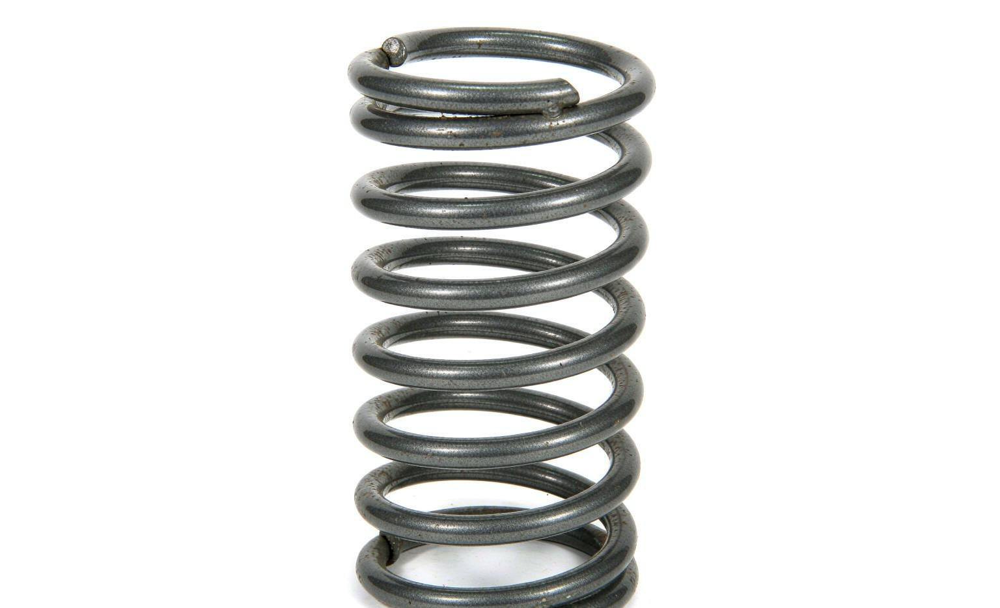

If your procurement list includes 93490-2W110, this reference page summarizes everything we can confirm: vehicle applications, equivalent part numbers, quality grade and export packing for the contact assy clock spring.
OE 93490-2W110 is a Contact ASSY Clock Spring reference. In the Hyundai-Kia numbering system the prefix 93490 denotes the Clock spring family, which holds 47 references in KingMay's Guangzhou catalog. Wholesale MOQ is 10 pieces; quotes are issued within one business day.
How 93490-2W110 decodes in the Hyundai-Kia catalog system. The prefix identifies the component family; the suffix carries model and variant information.
| Field | Value |
|---|---|
| Full reference | 93490-2W110 |
| Normalized (no hyphen) | 934902W110 |
| Prefix (family code) | 93490 |
| Prefix maps to | Clock spring |
| References sharing prefix 93490 | 47 in KingMay catalog |
| Numbering family | Hyundai-Kia 5+5 format |

Confirmed and reported applications for 93490-2W110. Verify trim and build year against your local fleet before ordering.
| Make / Model / Years |
|---|
| HYUNDAI GRAND SANTA FÉ 2.2 3.3 2013-2018 |
| HYUNDAI SANTA FÉ III (DM, DMA) 2012-2018 |
Other part numbers frequently ordered together with 93490-2W110 by wholesale clients.
| OE Number | Component |
|---|---|
| 93490-1G510 | Contact ASSY Clock S |
| 93490-1R451 | Contact ASSY Clock Spring |
| 93490-1W120 | Contact ASSY Clock S |
| 93490-22000 | Contact ASSY Clock S |
| 93490-2B300 | Contact ASSY Clock Spring |
| 93490-2D000 | Contact ASSY Clock S |
| 93490-2K200 | Contact ASSY Clock Spring |
| 93490-2M000 | Contact ASSY Clock S |
References that share the 93490 family prefix with 93490-2W110. In the Hyundai-Kia numbering system the leading five digits identify the component family, so these numbers usually belong to the same assembly group and are ordered together by distributors building a consolidated shipment. Always confirm the variant suffix, connector layout and dimensions before substituting one reference for another.
Other part numbers in the electrical & sensors group that wholesale clients order alongside OE 93490-2W110. Grouping mixed references into one shipment is how most importers reach full-container freight thresholds.
Browse all 1,350 Electrical & Sensors OE references → · ← Previous in Electrical & Sensors · Next in Electrical & Sensors →
| Item | Detail |
|---|---|
| Export packing | Neutral carton, inner foam protection; custom labels on request |
| Lead time | 7 working days (stock) · 25-35 days (production run) |
| Shipping terms | FOB Guangzhou / Shenzhen; CIF & DDP negotiable |
| Payment | T/T, LC at sight for contracts; sample orders by T/T |
| QC documentation | Packing list + photo report + dimension check per shipment |
The questions below are the ones buyers raise most often about OE 93490-2W110 — fitment, fault symptoms, cross-references, pricing and export terms. Each answer is written to be quotable on its own.
Watch for noise on cold start, vibration under load, warning lights, fluid seepage or uneven operation. Once any of those appears the contact assy clock spring should be inspected, and reference 93490-2W110 replaced if it measures outside specification.
Three checks: the code printed on your old part must read 93490-2W110; the number must fall inside the build-year range in the Applications table; and the connector, thread or bolt pattern must match the reference photo. Codes cast into the housing are the most reliable source.
A supersession happens when the maker revises a contact assy clock spring and issues a new tail number. The revision normally changes a small physical detail rather than the fit. Where we know a supersession chain for 93490-2W110 we list the current reference; ask our desk for written confirmation before a large order.
Match three things: the code on the part you are removing, the build-year range in the Applications table, and the mounting points visible in the reference photo. If all three line up, 93490-2W110 is a confirmed fit. Send your VIN and our export desk will double-check the ambiguous cases.
Incoming batches pass a dimensional check, a material look-up against the electrical & sensors specification, and a visual inspection for finish defects. Critical dimensions are measured per carton and the photographs are archived against the order number.
Standard minimum order is 10 pieces per part number. Mixed orders that combine 93490-2W110 with other electrical & sensors references are welcome — that is how most clients fill an LCL or FCL container without over-stocking a single line.
Buyers searching for OE 93490-2W110 most often land on these pages next.
Ask for the 93490-2W110 sample kit: photo confirmation, dimension report and material grade documentation included. All 93490-2W110 shipments leave with a packing list, photo documentation and QC report. Combined orders with other Hyundai-Kia references can share one container to cut landed cost. Payment terms are negotiable for established distributors; first-time buyers are welcome to start with a sample lot.
Send quantity + destination port. Quotations typically return within one business day.